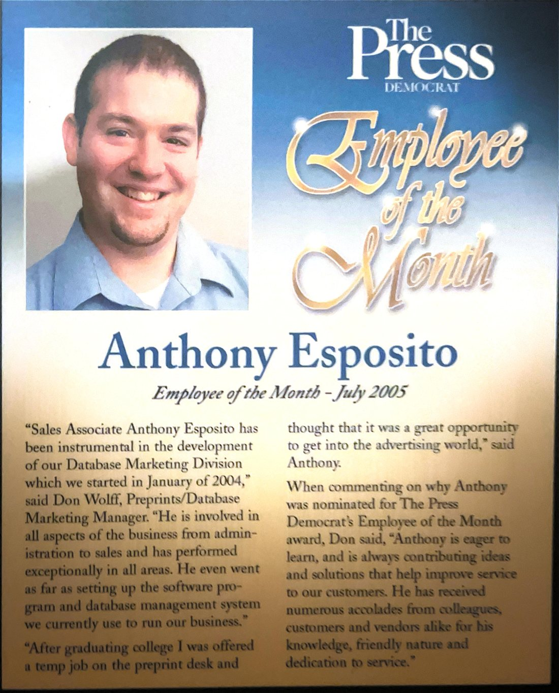
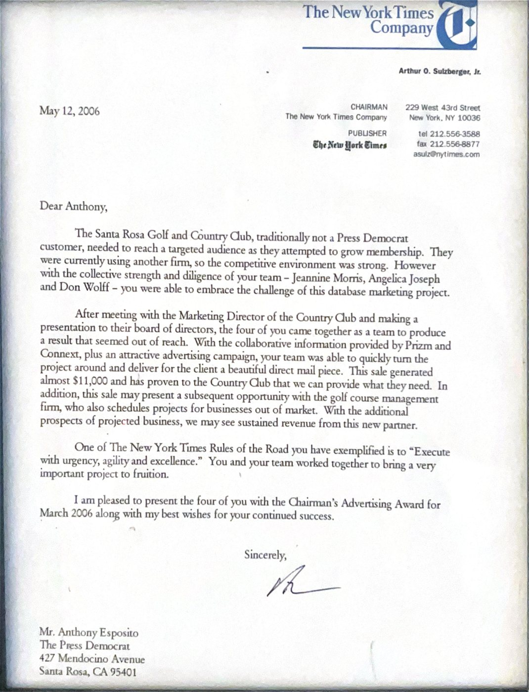

Before the Internet Was the Internet
Ten minutes. The era, the two documents, the agent org that ships in every system — shown running live — then all fourteen operating systems, one at a time. Roz and Brian carry it; the origin is in my own voice.
Two pieces of paper came out of a box this week. One is a plaque from a newspaper. The other is a letter from New York. I had not looked at either of them in years, and reading them again I realized they answer a question I get asked a lot, usually politely: how does one small company have fourteen business operating systems on the shelf?
The honest answer starts in 2004, in Santa Rosa, California, at The Press Democrat — a New York Times Company paper in the middle of wine country. I had come out of college into a temp job on the preprint desk. Then the paper replaced the system that ran the whole operation, the new one had no room for the department I was in, and somebody had to build that room.
The first exhibit: July 2005
The Press Democrat named me Employee of the Month for July 2005. The award is not the point. The point is one sentence my manager, Don Wolff, said in the write-up the paper printed:
Read that last sentence again. Not helped with. Not had ideas about. Set up the software program and the database management system the division used to run its business — an estimator, a production system, and the join between database marketing, direct mail and accounting. Built by the analyst who needed it, because the vendor's system did not have it and the work could not wait.
The second exhibit: March 2006
A year later a letter arrived from 229 West 43rd Street, signed by Arthur O. Sulzberger, Jr., Chairman of The New York Times Company. It presented the Chairman's Advertising Award for March 2006 to four of us — Jeannine Morris, Angelica Joseph, Don Wolff and me — for a database marketing project: a country club that had never been a customer, already using another firm, that our team won with a targeted direct mail piece built on segmentation data.
Four people earned that award and the letter credits all four, which is how it should read. My part was the research and the segmentation — the letter names the tools, Prizm and Connext — the presentation to the club's board of directors, the design direction, and the fact that the entire job was booked through the estimator and production system I had built the year before. The system did not have a name. It just ran the department.


Both scanned this week. Both in the file for twenty years.
What the next twenty-one years taught
I spent them in newspapers, in senior living, in hospice, and on national accounts. Four times, the company I worked for tore out the system that ran it and put in a new one while I was sitting inside — and every time I was on the pilot side, the person the new system got tried on first. You learn something doing that four times that you cannot learn any other way: the gap between how a business actually runs and how its software thinks it runs. Mapping that gap became the job, whatever the title on the door said.
And because agency and media work hands you a new industry with every account, the gap I was mapping was never the same twice. Real estate one year. A dental practice the next. An engineering firm, a theater, a photographer. Each one had to be learned, costed and process-mapped before anything could be built for it.
Fourteen trades, fourteen systems
So when Accelerated Experiences stocked its shelf, the fourteen operating systems on it were not a guess and they were not one product in fourteen colors. Each one is a different business, learned from the inside and built the way that first system was built in 2004: learn the trade, map how it actually runs, then build the thing that runs it.


Real estate · architecture · engineering · dental · home care · field service · auto retail · performing arts · live music · film & video · photography · kids gyms · tattoo studios · agencies
Two of them show where the shelf is headed. Toolbelt OS is for the trades that roll a truck — dispatch, proof of service, the technician's day. Buttress OS is for architects — drawing sets, consultants, phased billing. Same spine as 2004: an estimate becomes a proposal, a proposal becomes a contract, a contract becomes an invoice, and money comes in. A different body for every trade. Both are live in the store, and you can walk into either one right now.
2004–2007. A relational database marketing system for a New York Times Regional Media Group paper — the first operating system I developed: job-costing estimator, direct mail production tracking, and the join to accounting, built and administered in-house when the publisher's new production system shipped without a module for the division. Household-level segmentation with Claritas PRIZM and Connext for targeted direct mail. Chairman's Advertising Award, March 2006 (team of four; research, segmentation and board presentation mine).
2007–2024. Twenty-one years across newspaper and national media, senior living operations with a P&L, hospice, and national placement — four enterprise system replacements piloted from the inside. Process mapping and domain acquisition as the transferable competency.
2026. Fourteen multi-tenant vertical operating systems, one per trade, each with its own estimator-to-revenue spine; thirty-plus consumer apps; framework-free front ends built to WCAG 2.1 AA. Everything referenced here is live and enterable in a browser.
Why it matters now
People ask whether the fourteen are real. That is a fair question in 2026, when anyone can say anything. The two documents above are twenty years old, printed by other people, and they say what they say. Building the systems a business runs on is not something I picked up recently. It is what I have been doing since before the internet was the internet.
We are a family business in Post Falls, Idaho — a father, a nurse, and four kids who keep us honest. Everything on the shelf is live. No demos, ever.